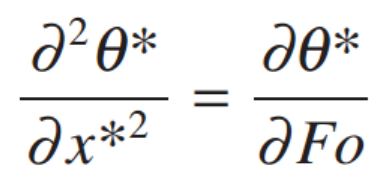
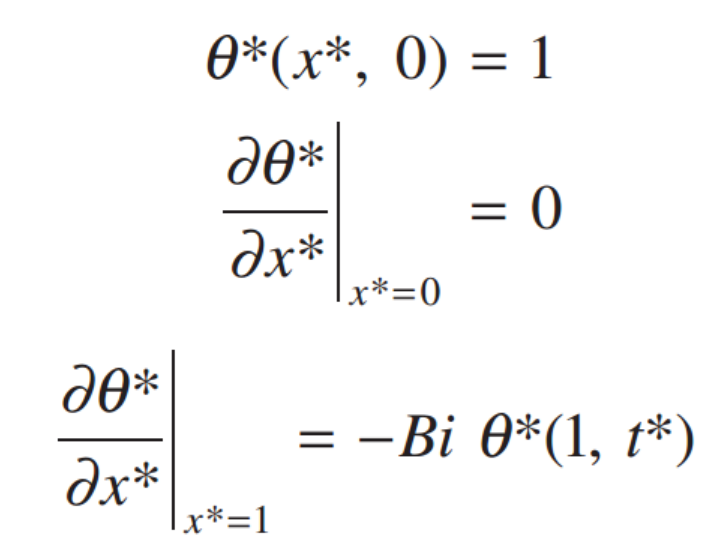
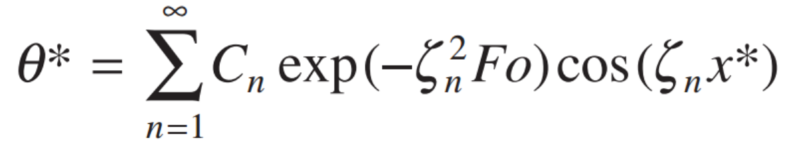
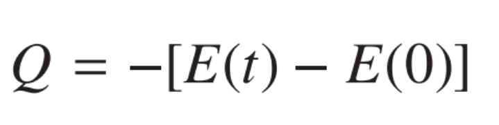
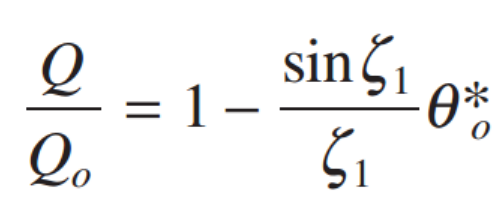

이제 Bi >0.1 인 경우에 대해서 살펴보자.
이 경우는 우리는 전도,대류 모두 전부 고려해야한다.
따라서, 이 경우는 x,y,z coordinate에서 temperature equation을 사용해야 한다.
그 중에서 ,
1-D, No heat generation인 경우를 살펴보자.
1-D PDE of heat equation
![[Heat and Mass transfer] Ch 5. Transient Conduction - part 2](./images/img-001.png)
PDE를 풀기 위해서는 Boundary condition이 필 수이다.
![[Heat and Mass transfer] Ch 5. Transient Conduction - part 2](./images/img-002.png)
![[Heat and Mass transfer] Ch 5. Transient Conduction - part 2](./images/img-003.png)
![[Heat and Mass transfer] Ch 5. Transient Conduction - part 2](./images/img-004.png)
![[Heat and Mass transfer] Ch 5. Transient Conduction - part 2](./images/img-005.png)
이 식을 풀게 되면, 상수들을 포함해서, 다음과 같이 많은 변수들이 존재한다.
![[Heat and Mass transfer] Ch 5. Transient Conduction - part 2](./images/img-006.png)
이를, 간단하게 하기 위해, Pi Theroerm 을 통한 Non-deimensionalize를 해주자.
1) 온도와 관련된 term들을 하나로
![[Heat and Mass transfer] Ch 5. Transient Conduction - part 2](./images/img-007.png)
2) Spatial term(x,L을 하나로)
![[Heat and Mass transfer] Ch 5. Transient Conduction - part 2](./images/img-008.png)
3) Time을 우리가 배운 Fourier Number로
![[Heat and Mass transfer] Ch 5. Transient Conduction - part 2](./images/img-009.png)
이렇게 바꿔주고, PDE와 Boundary Condition을 다시 써보면.


(Bi = hL/k, Biot number)
1-D PDE를 공학수학 시간에 배운 내용 그대로 한번 풀어보자.
![[Heat and Mass transfer] Ch 5. Transient Conduction - part 2](./images/img-012.jpg)
![[Heat and Mass transfer] Ch 5. Transient Conduction - part 2](./images/img-013.jpg)
최종Solution은 다음과 같이 나오고,
Boundary condition 1을 대입하면, Coefficient Cn이 나온다.(다음시간에 증명)
결론적으로, 정리해보면,
![[Heat and Mass transfer] Ch 5. Transient Conduction - part 2](./images/img-014.png)
지금까지 우리가 구한것은????
1-D, Transient case에서, solid안의 온도변화도 고려했을때,
x,t 에 따른, 고체 내부의 온도를 우리는 다음 식을 통해서
'정확히' 구할 수 있다.
![[Heat and Mass transfer] Ch 5. Transient Conduction - part 2](./images/img-015.png)
교재의 Appendix B에서는,
λn tan λn = Bi 의 해 λn을
Bi에 따라서 위의 표처럼 정리하였다.
자세히 보면, λn은 pi 보다 조금 작게 증가하는 것을 알 수 있다.
즉, λn은 계속해서 증가하므로,

n=1 부터 계속해서 증가한경우,
Cn 감소, exp 급격히 감소
하므로,
θ는 급격하게 감소할 것이다.
따라서, 위에서 구한 Exact Solution중,
Fo > 0.2 인 경우
exp() term이 상당히 큰 효과를
θ에 주기 때문에,
n = 2 이상인 경우는 사실상 해가 굉장히 작을 것이다.
따라서, General solution은 n=1인경우와 거의 동일 할 것이다.
Approximation Solution
![[Heat and Mass transfer] Ch 5. Transient Conduction - part 2](./images/img-017.png)
위 식에서, x = 0인경우,
![[Heat and Mass transfer] Ch 5. Transient Conduction - part 2](./images/img-018.png)
이고 이때의 온도는 Midplane temperature(x=0) 이다.
따라서, 최종 Solution을 다시 쓰게되면.
![[Heat and Mass transfer] Ch 5. Transient Conduction - part 2](./images/img-019.png)
즉, 시간에따라서, x*=0 에서의 온도와 고체의 모든 location에서의 온도는 변화할 것이다.
하지만, 변화하는 term은 exp( - λn^2 Fo)로 동일하다는 것이다.
이제 에너지 차원에서 문제를 분석해보자.
열역학 제1법칙 에너지 보존법칙을 사용하면,
Q = △E + W
여기서 일은 없고, △E = E(0) - E(t)
시간에 따른, 내부에너지의 변화량은 위와 같다.

고체의 내부 열에너지 변화량을 온도의 변화량으로 표현해보면,
E(t) - E(0) = ρ V c (T(t) - T(0))
하지만 고체 내부에서 x에 따라서 T(t) = T(x,t)가 다르다는 것 그리고,
그 온도를 지금까지 계산해 왔다.
따라서, 여기서 체적분을 사용해주어야 한다.
![[Heat and Mass transfer] Ch 5. Transient Conduction - part 2](./images/img-021.png)
여기서 적분을 우리가 아는
θ를 사용하여 표현하기 위해, Initial Energy relative to the Fluid 를 정의하고,
![[Heat and Mass transfer] Ch 5. Transient Conduction - part 2](./images/img-022.png)
나누어 주면,
![[Heat and Mass transfer] Ch 5. Transient Conduction - part 2](./images/img-023.png)
Plane wall같은 경우, dV = Adx* 이므로,
